Obyektlaringiz uchun IT-tizimlarni loyihalash, joriy etish va xizmat ko'rsatishПроектируем, внедряем и обслуживаем IT-системы для управления объектамиWe design, implement and service IT systems for facility management
Parking va ANPR, kirish nazorati, videokuzatuv, 1C/CRM integratsiyasi — har bir tizim loyihadan tortib to'liq servisgacha bir qo'lda. Паркинг и ANPR, контроль доступа, видеонаблюдение, интеграция с 1С/CRM — каждая система от проекта до полного обслуживания в одних руках. Parking and ANPR, access control, video surveillance, 1C/CRM integration — every system from design to full service in one place.
To'rtta yo'nalish — bitta javobgar jamoaЧетыре направления — одна ответственная командаFour core solutions — one accountable team
Loyihadan montajgacha, sozlashdan servisgacha — barchasi bizda. Alohida pudratchilarni qidirishingiz shart emas.От проекта до монтажа, от настройки до сервиса — всё у нас. Не нужно искать отдельных подрядчиков.From design to installation, from setup to service — all in one place. No need to chase separate contractors.

ParkingAvtomatik parkovkaАвтоматический паркингAutomated parking
Shlagbaum, davlat raqamini tanish (ANPR), abonement va onlayn to'lov. Mashina yaqinlashadi — to'siq o'zi ochiladi, navbat yo'qoladi. Bo'sh joylar tablosi real vaqtda yangilanadi.Шлагбаум, распознавание госномеров (ANPR), абонементы и онлайн-оплата. Машина подъезжает — барьер открывается сам, очереди исчезают. Табло свободных мест обновляется в реальном времени.Barriers, licence plate recognition (ANPR), season passes and online payment. A car pulls up — the barrier opens by itself and the queue disappears. The free-space display updates in real time.

SecurityXavfsizlik tizimlariСистемы безопасностиSecurity systems
Videokuzatuv, kirish nazorati, domofoniya va signalizatsiya. Obyekt 24/7 nazoratda, yozuvlar arxivda xavfsiz saqlanadi.Видеонаблюдение, контроль доступа, домофония и сигнализация. Объект под контролем 24/7, записи надёжно хранятся в архиве.Video surveillance, access control, intercom and alarms. Your site is under control 24/7 and recordings are securely stored in the archive.

AutomationJarayonlarni avtomatlashtirishАвтоматизация процессовProcess automation
Qo'lda bajariladigan ishlarni tizimga o'tkazamiz: kirish-chiqish, ish vaqti hisobi, xabarnoma va hisobotlar o'zi ishlaydi.Переводим ручные операции в систему: доступ, учёт рабочего времени, уведомления и отчёты работают сами.We move manual work into the system: access, time and attendance, notifications and reports all run by themselves.

IntegrationTizim integratsiyasiСистемная интеграцияSystem integration
Mavjud tizimlaringizni yagona markazga ulaymiz: 1C, CRM, to'lov servislari, kameralar va turniketlar bitta boshqaruv panelidan boshqariladi.Соединяем ваши системы: 1С, CRM, платёжные сервисы, камеры и турникеты управляются из единого центра.We connect the systems you already run: 1C, CRM, payment services, cameras and turnstiles are managed from a single centre.
Alohida qurilmalar emas — yagona tizimНе отдельные устройства — единая системаNot separate devices — a unified system
Shlagbaum alohida, kamera alohida, 1C alohida ishlasa — hisobot yig'ish qo'lda qoladi. Biz ularni bitta markazga ulaymiz: kim kirdi, qachon chiqdi, qancha to'ladi — barchasi bitta ekranda.Когда шлагбаум, камера и 1С работают по отдельности, отчёты приходится собирать вручную. Мы связываем их в один центр: кто въехал, когда выехал, сколько оплатил — всё на одном экране.When the barrier, the camera and 1C each work on their own, reports still have to be collected by hand. We link them into one centre: who came in, when they left, how much they paid — all on one screen.
- Bitta boshqaruv paneli — barcha obyektlar uchunОдна панель управления — для всех объектовOne control panel — for every site
- Avtomatik hisobotlar: kunlik, oylik va obyektlar kesimidaАвтоотчёты: за день, месяц, по каждому объектуAutomatic reports: daily, monthly, per site
- Telegram orqali tezkor xabarnomalarМгновенные уведомления в TelegramInstant notifications via Telegram
- Mavjud jihozlaringizni ham tizimga ulaymizПодключаем и уже установленное оборудованиеWe integrate your existing equipment too
So'nggi natijalarПоследние результатыRecent results

01Savdo markazi uchun avtomatik parkingАвтоматический паркинг для торгового центраAutomated parking for a shopping centre
ANPR kameralar, ikkita shlagbaum va bo'sh joylar tablosi — to'liq avtomatik tarzda ishlaydi.ANPR-камеры, два шлагбаума и табло свободных мест — работает без кассира.ANPR cameras, two barriers and a free-space display — it runs completely automated.

02Ishlab chiqarish korxonasida videokuzatuvВидеонаблюдение для производстваVideo surveillance for a manufacturing plant
64 kamera, 30 kunlik arxiv va yagona monitoring markazi.64 камеры, архив на 30 дней и единый центр мониторинга.64 cameras, a 30-day archive and a single monitoring centre.

03Logistika markazida 1C integratsiyasiИнтеграция с 1С в логистическом центре1C integration at a logistics centre
Shlagbaum, tarozi va 1C bitta jarayonga ulandi — hujjat o'zi shakllanadi.Шлагбаум, весы и 1С связаны в один процесс — документ формируется сам.Barrier, weighbridge and 1C linked into one process — the paperwork is generated automatically.
Qanday ishlaymizКак мы работаемHow we work
Obyektga chiqish va auditВыезд на объект и аудитSite visit and audit
Obyektni bevosita o'rganamiz: kirish nuqtalari, mavjud uskunalar, kabel yo'llari va real ehtiyojlarni aniqlaymiz.Осматриваем объект лично: точки входа, имеющееся оборудование, трассы кабеля и реальные потребности.We inspect the site in person: entry points, existing equipment, cable routes and what you actually need.
Loyiha va smetaПроект и сметаDesign and quote
Sxema, zarur uskunalar ro'yxati va aniq smeta. Nima uchun aynan shu uskunalar kerakligini tushuntiramiz — yashirin to'lovlarsiz.Схема, перечень оборудования и точная цена. Объясняем, почему нужно именно это оборудование — без скрытых платежей.A layout, an equipment list and a firm price. We explain why each item is needed — with no hidden charges.
Yetkazib berish va montajПоставка и монтажDelivery and installation
Uskunalarni yetkazib keltiramiz va o'zimiz sifatli o'rnatamiz. Ishlar obyekt faoliyatini to'xtatmasdan, kelishilgan grafik bo'yicha olib boriladi.Привозим оборудование и монтируем сами. Работы идут по согласованному графику, не останавливая объект.We bring the equipment and install it ourselves. Work follows an agreed schedule without shutting your site down.
Sozlash, test va o'qitishНастройка, тест и обучениеSetup, testing and training
Barcha ssenariylarni to'liq tekshiramiz va xodimlaringizni tizimdan foydalanishga o'rgatamiz.Проверяем все сценарии и обучаем ваших сотрудников работе с системой.We test every scenario and train your staff to use the system.
Servis va qo'llab-quvvatlashСервис и поддержкаService and support
Rasmiy kafolat, rejali texnik ko'rik va tezkor chaqiruv xizmati — tizimingiz doimo barqaror ishlaydi.Гарантия, плановое обслуживание и выезд по вызову — система не остаётся без присмотра.Warranty, scheduled maintenance and call-out visits — the system is never left unattended.
Obyektingizni bepul ko'rib chiqamizБесплатно осмотрим ваш объектWe'll survey your site free of charge
Qo'ng'iroq qiling yoki murojaat qoldiring — mutaxassisimiz obyektga chiqib, zarur yechim va aniq narxni hisoblab beradi.Позвоните или оставьте заявку — специалист приедет и точно скажет, что нужно и сколько это стоит.Call us or leave a request — a specialist will visit and tell you exactly what is needed and what it costs.